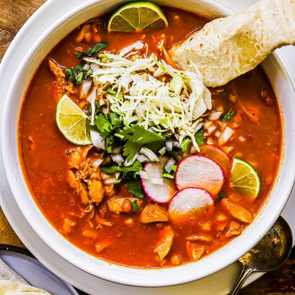

Pozole

Description
Pozole is a traditional soup or stew from Mexican cuisine. It is made from hominy with meat, and can be seasoned and garnished with shredded lettuce or cabbage, chile peppers, onion, garlic, radishes, avocado, salsa or limes.
Ingredients
- 4 ounces dried guajillo or ancho chiles, or a combination of both
- Salt
- 1 large can of white hominy
- 3lbs pork shoulder cut into 1 1/2 inch cubes
- 8 cloves garlic, 4 cloves roughly chopped, and 4 whole cloves
- 3 bay leaves
- 1 tsp ground cumin
- 2 tablespoons Mexican oregano
Steps
- Boil 5 qts water
- Heat chiles, after discarding stems, seeds, and large veins. Cover with 3 cups hot water
- Brown the pork in a pan on medium high heat, add chopped garlic after browning meat.
- Add pork and spices to a large stockpot of boiling water. Add bay leaves, cumin, and oregano.
- In a blender, add chiles, 2 1/2 of soaking liquid, 1 tsp of salt, 4 whole gloves of garlic. Blend and strain sauce.
- Add sauce to pot with pork and hominy. Add salt as needed.
- Cook 2-3 hours or until pork is completely tender.
- Serve with chopped cilantro, garlic, and lettuce and with a side of tostadas.